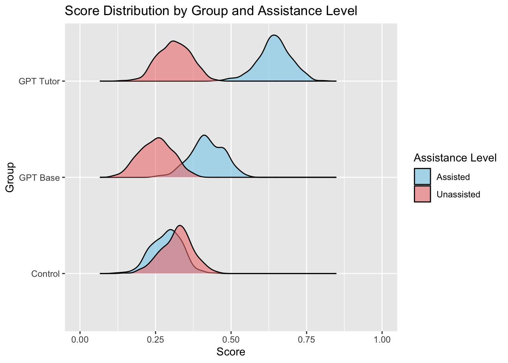

Generative AI Can Harm Learning: A Simulated Randomized Control Trial
Authors
Audrey Christensen (ac5470@columbia.edu)
Jared Donohue (jjd2203@columbia.edu)
Published
December 9, 2024
1 Executive Summary
As AI-based chatbots have become more widely used, students have naturally began relying on them for homework, studying, and essay writing. However, these chatbots have not been around very long, so the effects on student’s lives long term is not well understood. Many discussions around the use of AI focus on increasing worker productivity and how to keep students from cheating with AI, rather than analyzing the impact that AI use has on learning new skills.
This paper aims to quantify the impact that use of AI has on students’ performance. It does so by creating two distinct chatbots: one modeled after GPT-4 and another designed specifically to promote active learning. Student performance is then evaluated both with and without access to these chatbots.
The results from this experiment found that the base GPT model improved student performance on assisted tasks but lowered it on unassisted tasks, suggesting it hinders learning of new concepts. In contrast, a “tutor GPT” model boosted performance on assisted tasks without significantly affecting unassisted ones, indicating that purpose-built AI models may be a valuable tool for supporting students.
2 Pre-Experiment Analysis
At the start of the study, students completed a survey capturing their demographics and educational background. During the sessions, student performance was recorded for both the assisted practice and the unassisted evaluations. Additionally, students who interacted with AI chatbots had their chat data logged, and surveys captured their experiences using the tools.
Code
##### information provided in the papern_classes <-50students_per_class <-20n_students <- n_classes * students_per_classmean_gpa <-0.82sd_gpa <-0.11control_mean_assisted <-0.284control_sd_assisted <-0.287control_mean_unassisted <-0.321control_sd_unassisted <-0.277beta_base_mean_assisted <-0.137beta_base_sd_assisted <-0.031beta_base_mean_unassisted <--0.054beta_base_sd_unassisted <-0.022beta_tutor_mean_assisted <-0.361beta_tutor_sd_assisted <-0.032beta_tutor_mean_unassisted <--0.004beta_tutor_sd_unassisted <-0.013beta_prevGPA_mean_assisted <-0.802beta_prevGPA_sd_assisted <-0.076beta_prevGPA_mean_unassisted <-1.334beta_prevGPA_sd_unassisted <-0.069# gpa data simulationprev_gpa <-rtruncnorm(n_students, a =0, b =1, mean = mean_gpa, sd = sd_gpa)
3 Experiment Setup: Random Assignment
The research design was a randomized controlled trial involving nearly 1,000 students from 50 classrooms in grades 9 through 11 at a large high school in Turkey. Randomization was performed at the classroom level because students were already randomly assigned to these groups, and honors classrooms were excluded because they are not randomly assigned. Classrooms were randomly assigned to GPT Base, GPT Tutor, or control groups. Assignment probabilities were based on the proportion of students in each group as reported in the original study.
Code
# random assignment of class idsclass_ids <-rep(1:n_classes, each = students_per_class)student_ids <-1:n_students# assign treatment using probabilities from table 3 in the paperprob_base <-242/839prob_tutor <-277/839prob_control <-320/839treatment_assignment <-sample(c("GPT_base", "GPT_tutor", "control"), prob =c(prob_base,prob_tutor,prob_control), n_classes, replace =TRUE)GPT_base_class <-as.integer(treatment_assignment =="GPT_base")GPT_tutor_class <-as.integer(treatment_assignment =="GPT_tutor")control_class <-as.integer(treatment_assignment =="control")GPT_base <-rep(GPT_base_class, each = students_per_class)GPT_tutor <-rep(GPT_tutor_class, each = students_per_class)control <-rep(control_class, each = students_per_class)# fixed effects*sessions <-sample(1:4, n_students, replace =TRUE)grade_levels <-sample(9:12, n_students, replace =TRUE) teachers <-sample(1:20, n_students, replace =TRUE)graders <-sample(1:10, n_students, replace =TRUE)simulated_data <-data.frame(student_id = student_ids,class_id = class_ids,GPT_base = GPT_base,GPT_tutor = GPT_tutor,control = control,prev_gpa = prev_gpa)
4 Run Experiment: Simulate Student Scores
The study spanned four 90-minute sessions, each with a sequence of 3 activities. First, teachers reviewed the topic with students. Second, students participated in a randomized, assisted AI session, where they either used GPT Base, GPT Tutor, or relied on textbooks and notes (control group). This session was scored to assess performance. Finally, students completed an unassisted evaluation, also scored, to measure how well they had learned the new information.
Student scores are simulated. Since standard errors were calculated at the classroom level, we generated coefficients for each classroom by using the coefficients and standard errors provided in the paper. Coefficients were drawn from a normal distribution using the reported means and standard deviations, then applied to the paper’s linear regression model with a small amount of noise to calculate scores for each student.
Results indicate that use of the chatbots increased performance on the assisted assessment, with GPT Base improving scores by .137 (out of 1) and GPT Tutor improving scores by .361 (out of 1) relative to the control group. On the unassisted assessment, GPT Base decreased performance by .054 (out of one) relative to the control group (17% decrease). GPT Tutor’s impact on the unassisted portion was statistically significant at -.004.
The researchers also considered alternative analyses, such as examining results at the problem level. However, for this replication, we focus on the overall differences between the GPT Base and GPT Tutor models without exploring problem-level details.
5.1 Graphs
Code
# run regressions to compare results between groupsreg_assisted <-lm(scores_assisted ~ GPT_base + GPT_tutor + prev_gpa, data = simulated_data_with_betas)# summary(reg_assisted)reg_unassisted <-lm(scores_unassisted ~ GPT_base + GPT_tutor + prev_gpa, data = simulated_data_with_betas)# summary(reg_unassisted)write.csv(simulated_data_with_betas,'./simulated_data', row.names =FALSE)# head(simulated_data_with_betas)# TODO: STATISTICAL TESTS HERE# transform data so it's easier to use with ggplotlong_data <- simulated_data_with_betas %>%pivot_longer(cols =c(scores_assisted, scores_unassisted),names_to ="assistance",values_to ="score" ) %>%mutate(group =case_when( control ==1~"Control", GPT_base ==1~"GPT Base", GPT_tutor ==1~"GPT Tutor" ),assistance =recode(assistance, scores_assisted ="Assisted", scores_unassisted ="Unassisted") )# this one splits it up into assisted vs unassisted as the larger groups# makes it easier to see the groups compared to each otherplot1 <-ggplot(long_data, aes(x = group, y = score, fill = group)) +geom_boxplot(alpha =0.7) +facet_wrap(~ assistance, ncol =2) +labs(title ="Score Distributions by Group (Assisted vs. Unassisted)",x ="Group",y ="Score" ) +scale_fill_manual(values =c("Control"="skyblue", "GPT Base"="lightgreen", "GPT Tutor"="lightcoral") ) +theme_minimal() +theme(legend.position ="none",strip.text =element_text(face ="bold") )ggsave("./boxplot1.png", plot = plot1, width =8, height =6, dpi =300)# this one splits it up by treatment as the larger groupplot2 <-ggplot(long_data, aes(x = group, y = score, fill = assistance)) +geom_boxplot(position =position_dodge(width =0.8), alpha =0.7) +labs(title ="Score Distributions by Group and Assistance Level",x ="Group",y ="Score",fill ="Assistance Level" ) +scale_fill_manual(values =c("Assisted"="steelblue", "Unassisted"="lightcoral") ) +theme_minimal() +theme(strip.text =element_text(face ="bold") )ggsave("./boxplot2.png", plot = plot2, width =8, height =6, dpi =300)## faceted histogram ggplot(long_data, aes(x = score, fill = group)) +geom_histogram(binwidth =0.05, color ="steelblue", fill ="skyblue", position ="stack") +facet_grid(group ~ assistance) +labs(title ="Score Distributions by Group and Assistance Level",x ="Score",y ="Frequency" ) +theme_minimal() +theme(strip.text =element_text(face ="bold"),legend.position ="none" )
# assisted and unassisted data together on same axislong_data_combined <- long_data %>%filter(assistance %in%c('Assisted', 'Unassisted'))plot3 <- long_data_combined %>%ggplot(aes(score, fill = assistance)) +geom_histogram(binwidth =0.025, color ='steelblue', alpha =0.7) +facet_grid(group ~ .) +scale_x_continuous(limits =c(0, 1)) +scale_fill_manual(values =c('Assisted'='skyblue', 'Unassisted'='lightcoral')) +# Colors for assisted and unassistedlabs(title ="Score Distribution by Group and Assistance Level", x ="Score", y ="Frequency", fill ="Assistance Level") +theme_minimal() +theme(strip.text =element_text(face ="bold"))ggsave("./histograms_combined.png", plot = plot3, width =8, height =6, dpi =300)#ridgeline plot ggplot(data=long_data_combined, aes(x = score, y = group, fill = assistance, height = ..density..)) +geom_density_ridges(alpha =0.6, scale = .5) +scale_fill_manual(values =c('Assisted'='skyblue', 'Unassisted'='lightcoral')) +# Colors for assisted and unassistedscale_x_continuous(limits =c(0, 1)) +# Set x-axis range from 0 to 1labs(title ="Score Distribution by Group and Assistance Level", x ="Score", y ="Group", fill ="Assistance Level") +theme(strip.text =element_text(face ="bold"))

6 Conclusion
The results from this experiment found that the base GPT model improved student performance on assisted tasks but lowered it on unassisted tasks, suggesting it hinders learning of new concepts. In contrast, a “tutor GPT” model boosted performance on assisted tasks without significantly affecting unassisted ones, indicating that purpose-built AI models may be a valuable tool for supporting students.